Outlook Express Tutorial
This short tutorial will show you how to configure Outlook Express 6 for use with $Provider. If you continue having difficulty after following this tutorial, please check our troubleshooting page for solutions to the most common problems. And if all else fails, please use our contact page to get in touch with the $Provider Support Team.
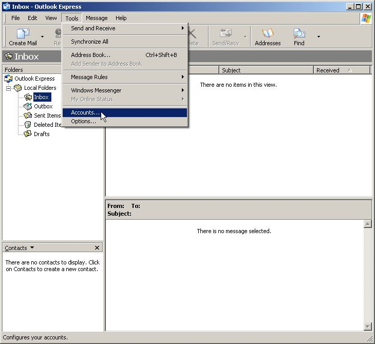Step One
To add a new e-mail account in Outlook Express, select the ‘Tools’ menu and then the ‘Accounts’ option. If you’re starting Outlook Express for the first time, you can skip directly to Step Three.
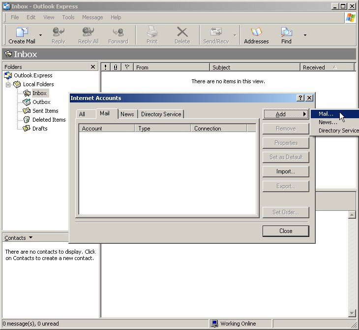Step Two
Click the ‘Add’ button and then select the ‘Mail’ option.
Step Three
In the ‘Display name’ field enter the name you want e-mails to appear from. Typically this is your full name, such as ‘John Doe’ or the name of the business the account is used for, such as ‘ACME Widgets’. For this tutorial, we’ve chosen to use ‘Example User’. When you’re done, click the ‘Next’ button.
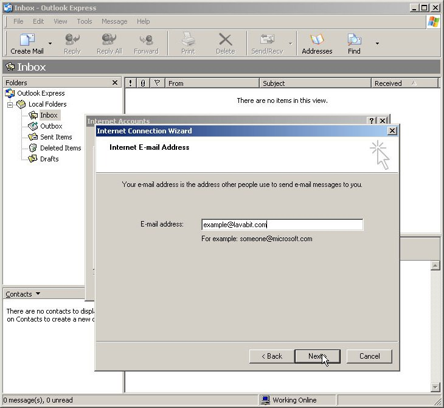Step Four
In the ‘E-mail address’ field, enter your new $Provider e-mail address. This will be your account_name@$Provider.com. In this example we have used the account name ‘example’. If the e-mail address you provide here doesn’t match the account name entered in Step Six, you won’t be able to send e-mail. When you’re done, click the ‘Next’ button.
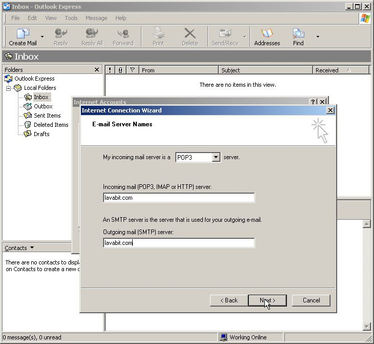Step Five
Make sure ‘POP3’ is selected in the drop down menu and then enter ‘$Provider.com’ in both the outgoing and incoming e-mail server fields. When you’re done, click the ‘Next’ button.
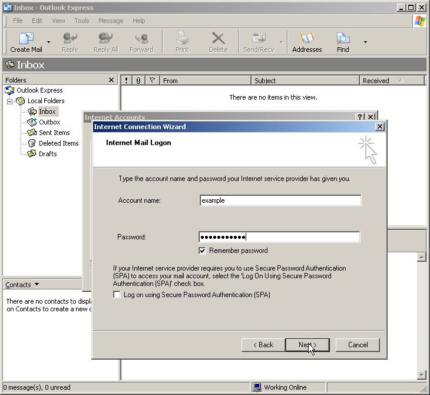Step Six
Enter the name of your new $Provider account in the field ‘Account Name’. If you’d like Outlook Express to store your password, enter it here and check the ‘Remember password’ option. If you don’t check this option, Outlook Express will prompt you for the password every time you send or receive e-mail. When you’re done, click the ‘Next’ button.
If you choose to have Outlook Express remember your password, please make sure you write it down and store it in a safe place. Because of the encryption methods we use at $Provider, our administrators can’t change your account password without knowing the existing password.
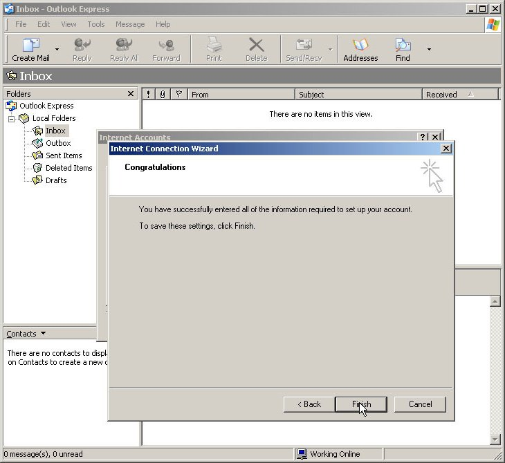Step Seven
At this point, you’ve successfully registered the account with Outlook Express and can download your e-mail. We still have one more change to make before you can send e-mail. Click the ‘Finish’ button, and we’ll be ready to make that last change.
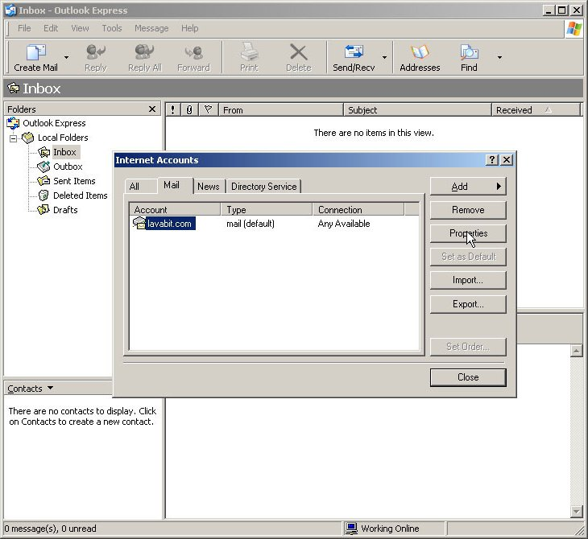Step Eight
To send e-mail, we require you to enable SMTP authentication. To enable SMTP authentication, make sure your new $Provider account is selected and press the ‘Properties’ button.
If you are starting Outlook Express for the first time, you won’t be returned to this screen. To get here, follow the instructions for Step One: select the ‘Tools’ menu and then the ‘Accounts’ option. If necessary, navigate to the ‘Mail’ tab pictured above. Make sure your $Provider account is selected and then press the ‘Properties’ button.
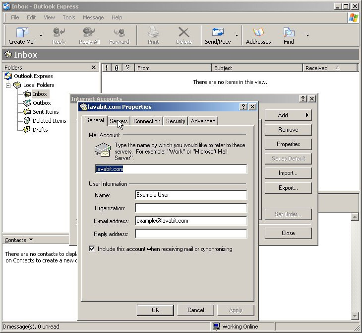Step Nine
The option for enabling SMTP authentication is located on the ‘Servers’ tab.
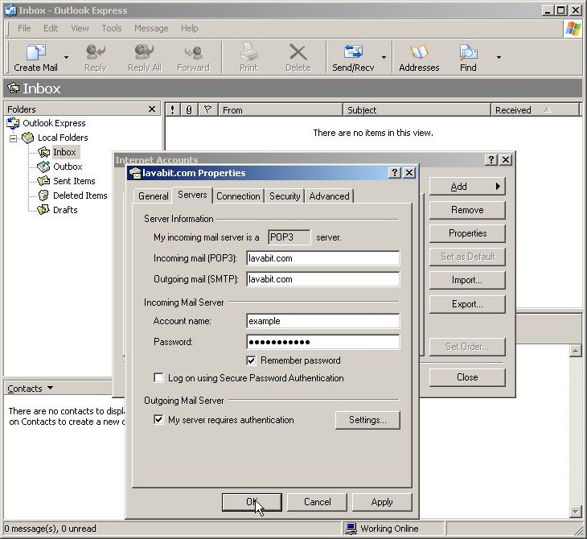Step Ten
Make sure the ‘My server requires authentication’ option is checked and then press ‘OK’.
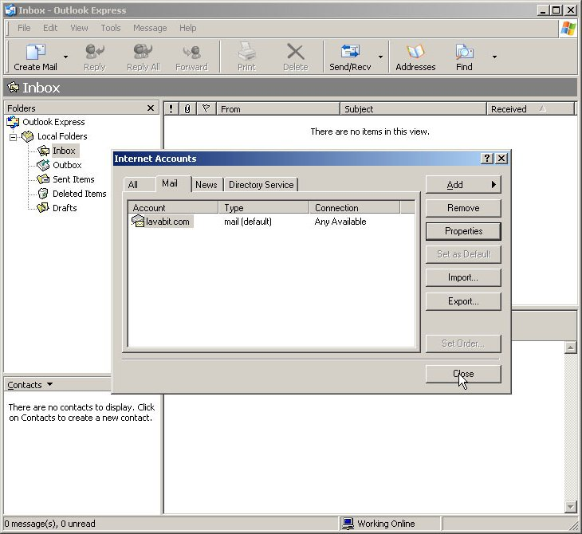Step Eleven
Your account is now set up and ready to go. Press the ‘Close’ button, and we can test the account.
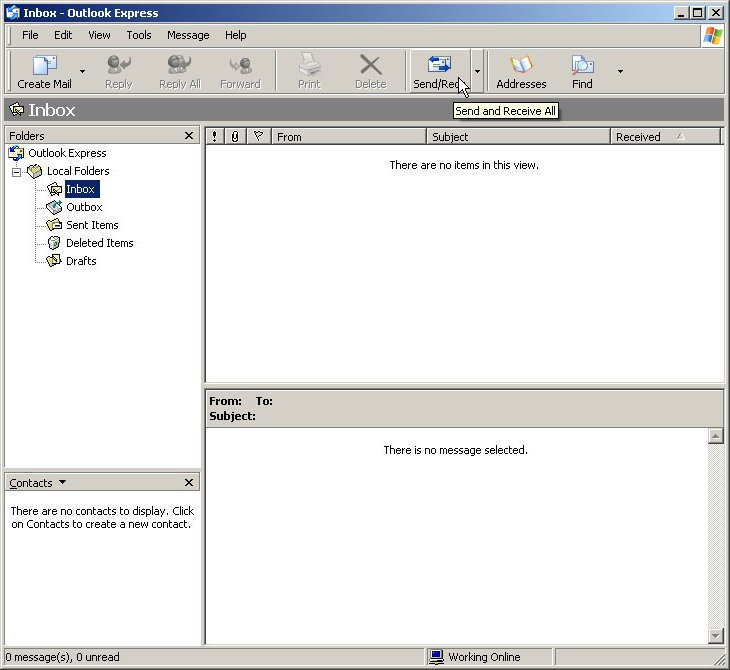Step Twelve
To prompt Outlook Express to download your e-mail immediately, press the ‘Send/Recv’ button.
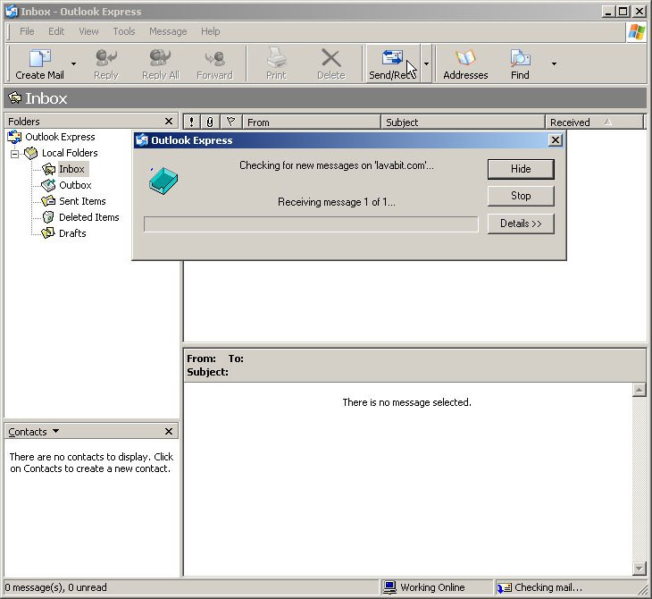Step Thirteen
You should be greeted briefly by the progress dialog box pictured above. If you choose not to enter your password during Step Six, you’ll be asked for it here.
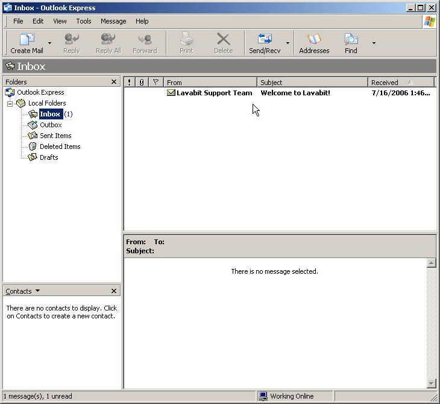Step Fourteen
If everything worked correctly, the progress dialog box should disappear and a welcome message from the $Provider Support Team should be in your Inbox. You can also try sending an e-mail to make sure you outgoing mail works as well.
For most users, this is the happy ending to the story. If you hit a snag, please check our troubleshooting page for solutions to the most common problems. We also recommend you that you follow optional Step Fifteen, because enabling SSL and changing the port numbers will fix the most common problem people encounter (hover:Common Problem Hover). If you’re still stuck, please use our contact page to get help from the $Provider Support Team.
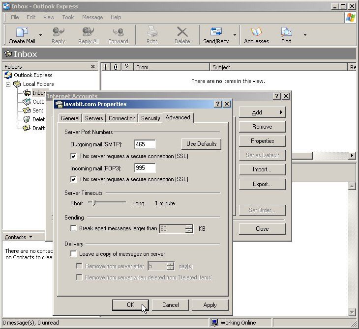Step Fifteen
For most users, this step is optional but recommended. For added security, we highly recommend enabling SSL. To enable SSL, select the ‘Tools’ menu and then the ‘Accounts’ option. Make sure your $Provider account is selected and then press the ‘Properties’ button. Navigate to the ‘Advanced’ tab pictured above and then check both ‘This server requires a secure connection (SSL)’ options. You’ll need to manually change the outgoing e-mail port to 465. The incoming e-mail port should automatically change to 995. When you’re done, the screen should look like the one above. Press the ‘OK’ button to save your changes and test the ‘Send/Recv’ button again.